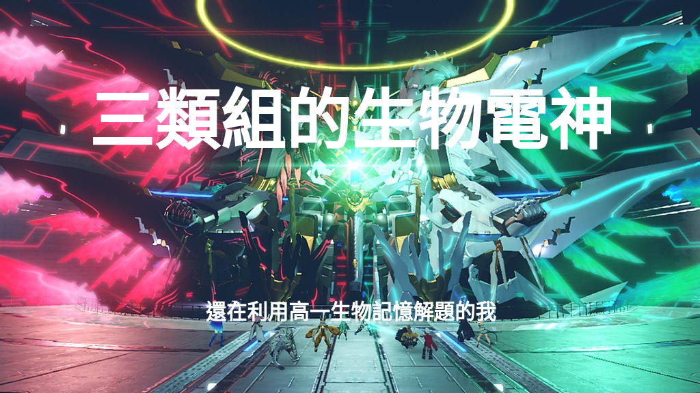

每次都說段考後，段考過後就是下次段考後
蠟筆小淵開墮 不買快樂版還敢下來考物理阿
昨天剛考完，本次段考主科大家都考得不錯，副科便是決勝關鍵了。我一直都是一個副科仔，反正社會自然有念有分，國英數也不是不念，就是相對來講性價實在不成比例。高一的時候大概就是數學40幾還是靠副科撐組排，國文也不怎麼優秀，更甭說英文了。這次詩淵開墮，七個月大照樣墮，平常就是太便宜這些學生了，還不趕緊買爆快樂版（力矩那題包含我在內有幾位電神朋友都寫r x F ，笑死）。
pneuma就是婆婆婆婆婆
好了這禮拜清明連假，記得我的xenoblade chronicles 2是3/8號弄到的，算過來今天的累積時數是101小時，一週目通關，昨天剛滿等99，目前稀有blade只差kos-mos(幹我到底怎麼考段考的，國中記得也有一次段考前一個月看完獵人)。現在支線任務加減做，之後挑戰模式摸一下，羈絆環和迷戀藥農一農，打完海蛇裝置之後看要接著二週目還是玩dlc黃金之國伊拉。
居然來到第三段
今天社辦蚊子很多，yuga在認真寫程式，柏炘在重灌數創電腦，我在打部落格，等等關掉之後也要來寫程式了（抱歉媽，牙科改天再去）。已經很久都沒有從緊繃的狀態放鬆了（至少頭上沒什麼太急迫的壓力），今天寫得很開心，感覺有找回一開始的感動。